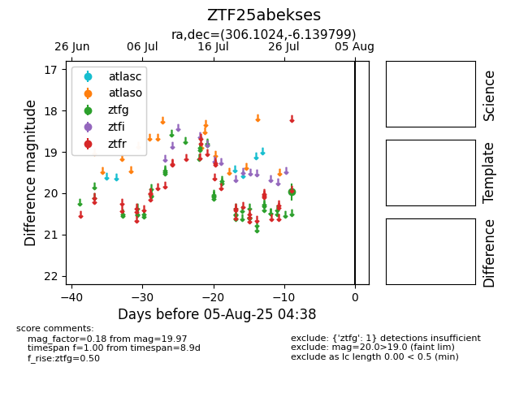

Target ZTF25abekses at 2025-08-05 04:38, see:
FINK: fink-portal.org/ZTF25abekses
Lasair: lasair-ztf.lsst.ac.uk/objects/ZTF25abekses
ALeRCE: alerce.online/object/ZTF25abekses
alt names
ZTF25abekses (ztf,fink)
coordinates:
equatorial (ra, dec) = (306.1024,-6.13980)
galactic (l, b) = (38.1682,-23.45141)
photometry
last ztfg=19.97
1 ztfg detections
